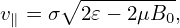

5.2 Eliminate ∂⟨δv ⋅ δA⟩α∕∂t term on the right-hand side of GK equation
Similar to the method of eliminating ∂⟨δϕ⟩α∕∂t, we deï¬ne another gyro-phase independent function δh
by
 | (144) |
then Eq. (143) is written in terms of δh as
Noting that ∂F0∕∂t = 0, e∥⋅∇F0 = 0, ∇F0 ∼ O(λ1)F0, we ï¬nd that the third line of the
above equation is of order O(λ3) and thus can be dropped. Moving the second line to the
right-hand side and noting that ⟨δL⟩α = ⟨δϕ − v ⋅ δA⟩α, the above equation is written as
where two ∂⟨v ⋅ δA⟩α∕∂t terms cancel each other and no time derivatives of the perturbed ï¬elds
appear on the right-hand side. Noting that δVD given by Eq. (127) is perpendicular to
∇X⟨v ⋅ δA − δΦ⟩α and thus the blue term in Eq. (146) is zero, then Eq. (146) simpliï¬es to
Using VG = v∥e∥ + VD + δVD, equation (146) can also be written as
For special case δA ≈ δA∥e∥
Most gyrokinetic simulations approximate the vector potential as δA ≈ δA∥e∥. Let us simplify Eq.
(147) for this case. Then ⟨v ⋅ δA⟩α is written as
Note that in terms of (X,𝜀,μ,α,σ) coordinates, v∥ is written as
where B0(x) = B0(X + ρ) with ρ = ρ(X,𝜀,μ,α). Since the scale length of B0 is much larger than the
thermal Larmor radius, B0(x) ≈ B0(X) and hence v∥ of thermal particles can be approximately
considered to be independent of the gyro-angle α. Then v∥ can be taken out of the gyro-averaging in
expression (149), yielding
 | (151) |
Using this, the term related to δA in (147) is written as

Using expression (150), (v∥e∥ + VD) ⋅∇X(v∥) is written as (We can also obtain ∇X(v∥) = −μ(∇B0)∕v∥ by using Eq. (275)). Using the above results, equation
(147) is written as which agrees with the so-called p∥ formulation given in GEM code manual (the ï¬rst line of Eq. 28),
which uses p∥ = v∥ + q⟨A∥⟩α∕m as an independent variable.
![[ ∂ ]
--+ (v∥e∥ + VD + δVD )⋅∇X δh
∂t [( ) ]
+ q-∂F0- ∂-+ v∥e∥ + VD + δVD ⋅∇X ⟨v ⋅δA⟩α
m ∂𜀠∂t[( ) ]( )
q- ∂- ∂F0-
+ m ⟨v⋅δA ⟩α ∂t + v∥e∥ + VD + δVD ⋅∇X ∂𝜀
= − δVD ⋅∇XF0
q [ ∂⟨v ⋅δA ⟩ ] ∂F
− -- − --------α − (v∥e∥ + VD + δVD ) ⋅∇X ⟨δΦ ⟩α --0, (145)
m ∂t ∂𝜀](nonlinear_gyrokinetic_equation153x.png)

![[ ]
∂-+ (v∥e∥ + VD + δVD )⋅∇X δh
∂t
= − δVD ⋅∇XF0
-q ∂F0-
−m [(v∥e∥ +VD + δVD )⋅∇X (⟨v⋅δA − δΦ⟩α)]∂𜀠, (146)](nonlinear_gyrokinetic_equation154x.png)
![[ ∂ ]
-- + (v∥e∥ +VD + δVD )⋅∇X δh
∂t
= − δVD ⋅∇XF0
− q-[(v e + VD )⋅∇X ⟨v ⋅δA − δΦ ⟩α]∂F0-. (147)
m ∥ ∥ ∂𝜀](nonlinear_gyrokinetic_equation155x.png)
![[ ]
∂-+ V ⋅∇ δh
∂t G X
q- ∂F0-
= − δVD ⋅∇XF0 − m [VG ⋅∇X ⟨v⋅δA − δΦ⟩α]∂ 𜀠. (148)](nonlinear_gyrokinetic_equation156x.png)
![[ ∂ ]
--+ (v∥e∥ + VD + δVD )⋅∇X δh
∂t
= − δVD ⋅∇XF0
− q-[− (v e + VD )⋅∇X ⟨δΦ⟩α]∂F0-,
m ∥ ∥ ∂𝜀
− q-[v (v e + V )⋅∇ ⟨δA ⟩ − ⟨δA ⟩ (μe ⋅∇B )]∂F0, (154)
m ∥ ∥ ∥ D X ∥ α ∥ α ∥ 0 ∂𝜀](nonlinear_gyrokinetic_equation162x.png)